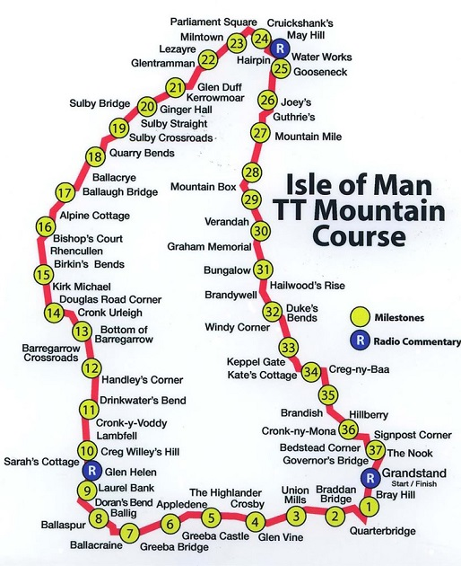

Course Route:
The oldest motorcycle racing circuit still in use is the Snaefell Mountain Course over which the Isle of Man TT Races are run.
The official lap record for the Mountain Course is 16 minutes and 53.929 seconds at an average speed of 133.96 mph set by Michael Dunlop during the 2016 Senior TT race.
The race record is also held by Dunlop in 1 hour, 43 minutes and 56.12 seconds; an average race speed of 130.68 mph achieved during the same 6 lap race.
The Isle of Man TT has been traditionally run in a time-trial format on public roads closed for racing by the provisions of an Act of Tynwald (the parliament of the Isle of Man).
It is estimated that there are over 200 corners on the Mountain Course with about 60 named corners, some of which have people-specific names.
Between 1911 and 2016 there have been 252 rider competitor fatalities during official practices or races on the Mountain Course.
There is no speed limit on the Isle of Man and this is why the Mountain Course is so popular for motorbike events, to see who is the top racer.